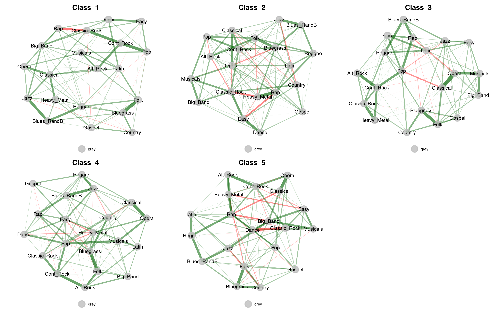
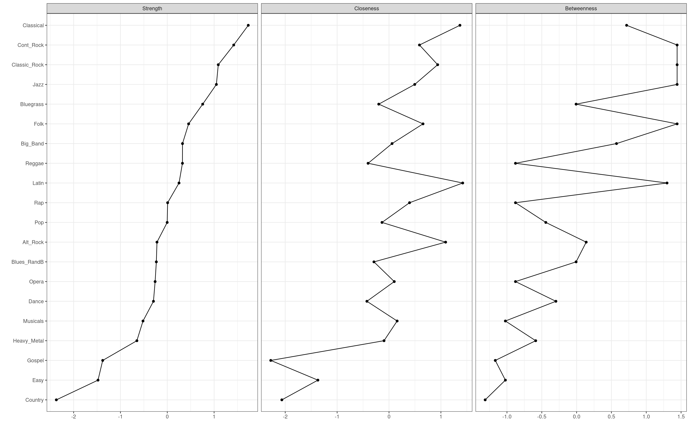
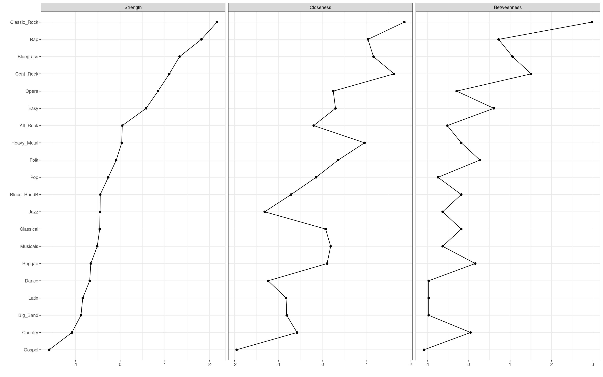
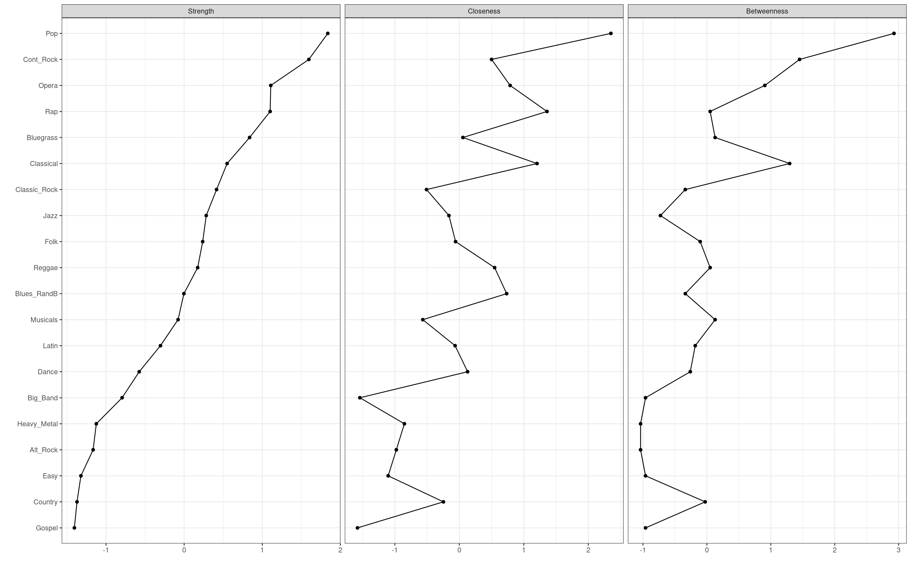
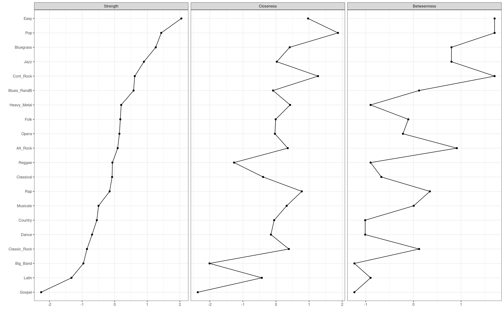
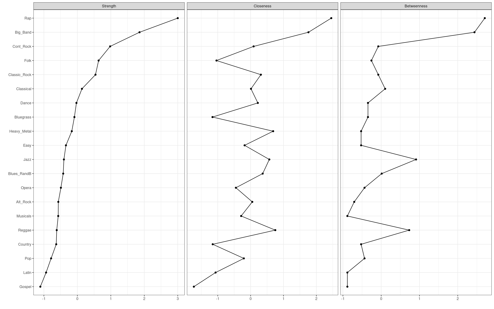
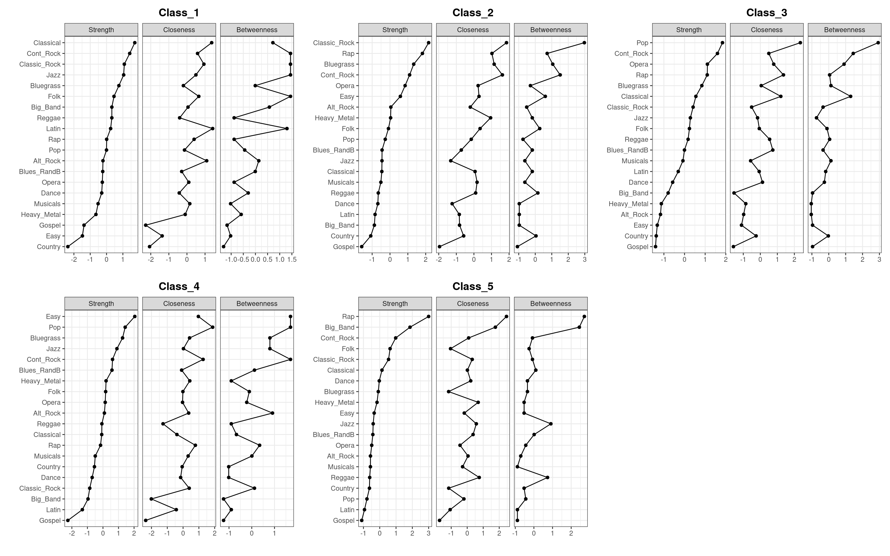
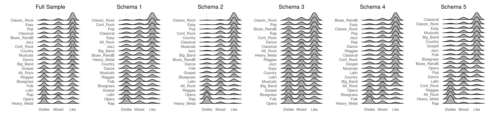
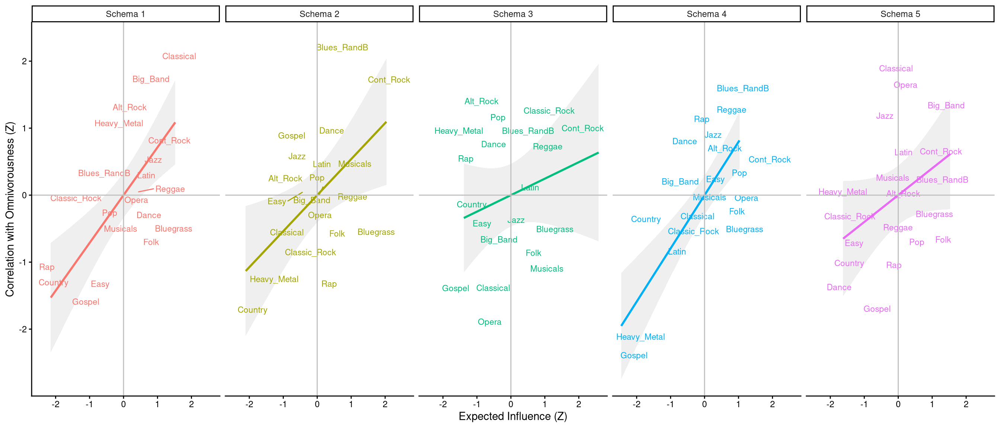

library(EGAnet)
library(corclass)
library(ggridges)
library(haven)
library(here)
library(Hmisc)
library(patchwork)
library(qgraph)
library(tidyverse)
library(mice)
library(networktools)Psychometric Network Analysis of Taste Schemas
Setup
Data Import and Cleaning
We load the raw data, isolate the taste variables, and apply our reverse-coding scheme so that 1 = Dislike, 2 = Mixed, 3 = Like. We also drop respondents who have zero variance across their taste evaluations.
set.seed(1234)
# Define column mapping for clarity
taste_cols <- c(
"Classical" = "classicaltaste", "Opera" = "operataste", "Jazz" = "jazztaste",
"Musicals" = "bwaysttaste", "Easy" = "moodeztaste", "Big_Band" = "bbandtaste",
"Classic_Rock" = "croldtaste", "Country" = "countrytaste", "Bluegrass" = "bluegtaste",
"Folk" = "folktaste", "Gospel" = "hymgostaste", "Latin" = "latspsaltaste",
"Rap" = "raphiphoptaste", "Blues_RandB" = "blurbtaste",
"Reggae" = "reggaetaste", "Pop" = "toppoptaste", "Cont_Rock" = "controcktaste",
"Alt_Rock" = "indalttaste", "Dance" = "danclubtaste", "Heavy_Metal" = "hvymtltaste"
)
raw_data <- read_dta(here("data", "SSI2012.dta"))
taste_dat <- raw_data |>
select(id, all_of(taste_cols)) |>
# Recode so 1=Dislike, 2=Mixed, 3=Like. 4 means missing.
mutate(across(-id, ~ case_when(
as.integer(.x) == 1L ~ 3L,
as.integer(.x) == 2L ~ 1L,
as.integer(.x) == 3L ~ 2L,
TRUE ~ NA_integer_
))) |>
# Calculate variance/SD to drop zero-variance rows
mutate(taste_sd = apply(pick(-id), 1, sd, na.rm = TRUE)) |>
filter(!is.na(taste_sd) & taste_sd != 0) |>
select(-taste_sd)Imputation
Instead of taking the median across 10 imputed datasets (which breaks Rubin’s rules and can create non-integer ordinals), we use mice to generate a single robust imputation (using Predictive Mean Matching) solely to create a complete dataset for the correlational class analysis.
imp_res <- mice(taste_dat |> select(-id), m = 1, method = "pmm", seed = 1234, printFlag = FALSE)
taste_dat_imp <- complete(imp_res, 1)
# Attach ID back
taste_dat_imp <- bind_cols(id = taste_dat$id, taste_dat_imp)Correlational Class Analysis (CCA)
cca_res <- cca(taste_dat_imp |> select(-id), filter.value = 0.01)Filtering out correlations for which Pr(|r| != 0) > 0.01
CCA found 5 schematic classes. Sizes: 481 369 574 419 340 taste_dat_c <- taste_dat_imp |>
mutate(Class = as.factor(cca_res$membership))
# Quick count of classes
table(taste_dat_c$Class)
1 2 3 4 5
481 369 574 419 340 Network Estimation & Centrality
We iterate over the classes to estimate the networks dynamically. EGA will default to polychoric correlations for these ordinal variables.
# Split data by class
class_data_list <- taste_dat_c |>
group_split(Class) |>
set_names(paste0("Class_", sort(unique(taste_dat_c$Class))))
# Function to estimate EGA and extract centrality
estimate_ega <- function(dat) {
net_dat <- dat |> select(-id, -Class)
# Use Leiden algorithm for community detection
ega_obj <- EGA(net_dat, algorithm = "leiden", objective_function = "CPM", plot.EGA = FALSE)
list(ega = ega_obj, data = net_dat)
}
# Apply to all classes
results_classes <- map(class_data_list, estimate_ega)Network Plots
We can visualize the underlying graph structure for each schema. The nodes (genres) are grouped and colored based on the communities identified by the Leiden algorithm.
plot_network <- function(res, title) {
# The plot method for EGA objects returns a ggplot object
plot(res$ega, plot.args = list(vsize = 6, label.size = 4, alpha = 0.8)) +
labs(title = title) +
theme(plot.title = element_text(hjust = 0.5, size = 16, face = "bold"),
legend.position = "bottom")
}
net_plots <- imap(results_classes, ~ plot_network(.x, .y))
wrap_plots(net_plots, ncol = 3)
Centrality Plots
By standardizing centrality measures to Z-scores, we can directly compare Strength, Closeness, and Betweenness on the same scale. The genres are ordered by Strength, identifying the most core components of each schema.
plot_centrality <- function(res, title) {
# qgraph::centralityPlot calculates Z-scores and returns a ggplot object
centralityPlot(res$ega$network,
include = c("Strength", "Closeness", "Betweenness"),
scale = "z-scores",
orderBy = "Strength") +
labs(title = title) +
theme(plot.title = element_text(hjust = 0.5, size = 14, face = "bold"))
}
cent_plots <- imap(results_classes, ~ plot_centrality(.x, .y))




wrap_plots(cent_plots, ncol = 3)
Schema Interpretations
Based on the psychometric network structures and node centralities, we can interpret these schematic classes not just by what respondents like or dislike, but by how their tastes are organized. Genres with high Strength act as core anchors—meaning feelings about that genre strongly dictate feelings about the rest of the music landscape. Betweenness highlights genres that act as bridges connecting disparate clusters.
- Schema 1: The “Highbrow / Rock Anchor” Schema Core Anchors:
Classical,Cont_Rock,Classic_Rock,Jazz. For this group, “highbrow” genres and standard rock act as the central organizing principles. Their opinions on these genres strongly predict their entire taste profile. They tend to strongly reject Rap and Opera. - Schema 2: The “Classic Rock / Pop Core” Schema Core Anchors:
Classic_Rock,Rap,Bluegrass. This schema represents a very common taste profile anchored centrally by Classic Rock. Interestingly,Raphas very high strength and betweenness here—meaning that whether they tolerate or reject Rap is a massive polarizing divider that structurally dictates the rest of their network. - Schema 3: The “Pop / Contemporary Bridge” Schema Core Anchors:
Pop,Cont_Rock,Opera,Rap. Organized heavily around mainstream pop and contemporary music,Popis the absolute central load-bearing pillar.Operaacts as a strong negative anchor (highly central because almost everyone in this class uses their uniform dislike of it to structurally define their taste). - Schema 4: The “Easy Listening / Roots” Schema Core Anchors:
Easy(Easy Listening),Pop,Bluegrass,Jazz. A softer, traditionalist schema. Harder genres like Heavy Metal are pushed completely to the network’s periphery. The network revolves structurally around accessible, easy-to-digest music and roots music. - Schema 5: The “Polarized / Omnivore” Schema Core Anchors:
Rap,Big_Band,Cont_Rock,Folk. The most eclectic and structurally diverse schema. The core anchors span across completely different historical and cultural eras. High betweenness for these genres means this class evaluates music across boundaries, heavily indicating an “Omnivore” profile where genres serve as bridges rather than isolated islands.
Genre Evaluations (Ridge Plots)
taste_long <- taste_dat_c |>
pivot_longer(cols = -c(id, Class), names_to = "genre", values_to = "eval")
plot_ridges <- function(df, title) {
ggplot(df, aes(x = eval, y = reorder(genre, eval))) +
geom_density_ridges2() +
scale_x_continuous(breaks = 1:3, labels = c('Dislike','Mixed','Like')) +
labs(x = "", y = "", title = title) +
theme_minimal()
}
ridge_full <- plot_ridges(taste_long, "Full Sample")
ridge_classes <- map(sort(unique(taste_dat_c$Class)), ~ {
plot_ridges(taste_long |> filter(Class == .x), paste("Schema", .x))
})
wrap_plots(c(list(ridge_full), ridge_classes), nrow = 1)
Validation Step
To structurally validate our uncovered schemas, we assess whether the psychological organization of tastes (network centrality) corresponds to behavioral listening patterns. We correlate the Expected Influence (node strength) of each genre within its respective schema network to the genre’s correlation with the respondent’s overall “omnivorousness” (the total count of genres they actually listen to).
If the schema networks are capturing genuine cultural logic, genres that anchor the schema (high expected influence) should strongly predict an individual’s behavioral omnivorousness.
# Load behavioral listening data
beh_cols <- c(
"Classical" = "classicallis", "Opera" = "operalis", "Jazz" = "jazzlis",
"Musicals" = "bwaystlis", "Easy" = "moodezlis", "Big_Band" = "bbandlis",
"Classic_Rock" = "croldlis", "Country" = "countrylis", "Bluegrass" = "blueglis",
"Folk" = "folklis", "Gospel" = "hymgoslis", "Latin" = "latspsallis",
"Rap" = "raphiphoplis", "Blues_RandB" = "blurblis",
"Reggae" = "reggaelis", "Pop" = "toppoplis", "Cont_Rock" = "controcklis",
"Alt_Rock" = "indaltlis", "Dance" = "danclublis", "Heavy_Metal" = "hvymtllis"
)
lis_dat <- raw_data |>
select(id, all_of(beh_cols)) |>
drop_na() |>
mutate(omni = rowSums(across(-id)))
# Calculate validation metrics per class
calc_validation <- function(class_idx, list_obj) {
ei_res <- expectedInf(list_obj$ega$network)$step1
ei_df <- tibble(genre = names(ei_res), exp_inf = scale(ei_res)[,1])
dat <- taste_dat_c |>
filter(Class == class_idx) |>
inner_join(lis_dat |> select(id, omni), by = "id")
corrs <- map_dbl(names(ei_res), ~ cor.test(dat[[.x]], dat$omni, method = "spearman")$estimate)
ei_df |> mutate(omni_corr = scale(corrs)[,1], Class = paste("Schema", class_idx))
}
val_df <- map2_dfr(sort(unique(taste_dat_c$Class)), results_classes, calc_validation)
ggplot(val_df, aes(x = exp_inf, y = omni_corr, color = Class)) +
geom_smooth(method = "lm", alpha = 0.15) +
ggrepel::geom_text_repel(aes(label = genre), size = 3) +
facet_wrap(~ Class, nrow = 1) +
theme_classic() +
geom_hline(yintercept = 0, color = "gray") +
geom_vline(xintercept = 0, color = "gray") +
labs(x = "Expected Influence (Z)", y = "Correlation with Omnivorousness (Z)") +
theme(legend.position = "none")